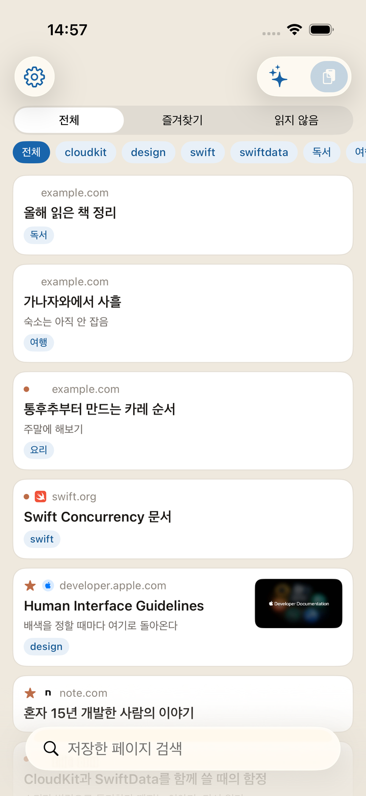
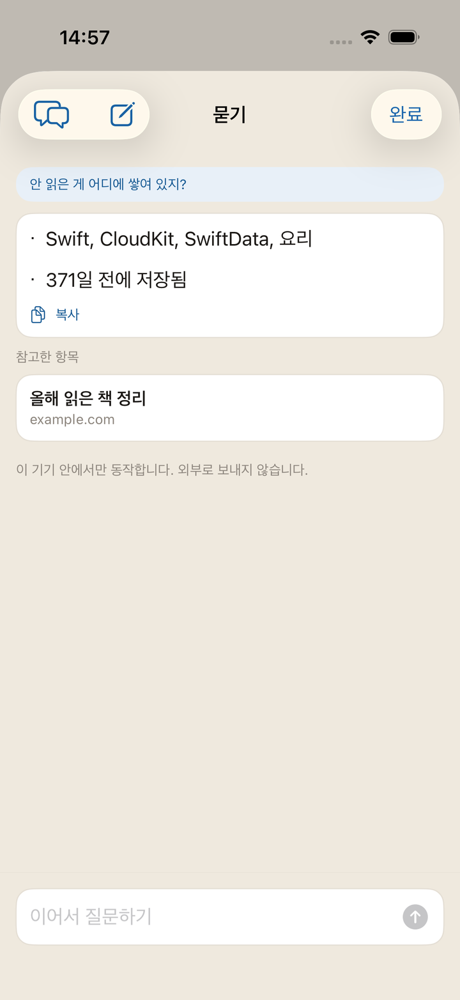
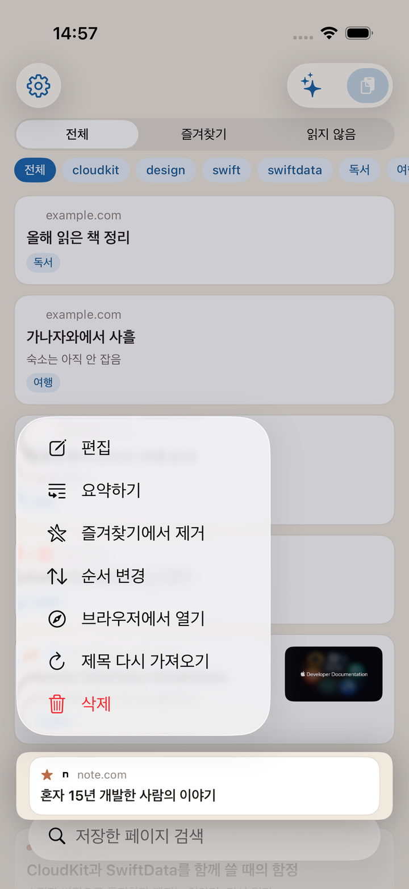
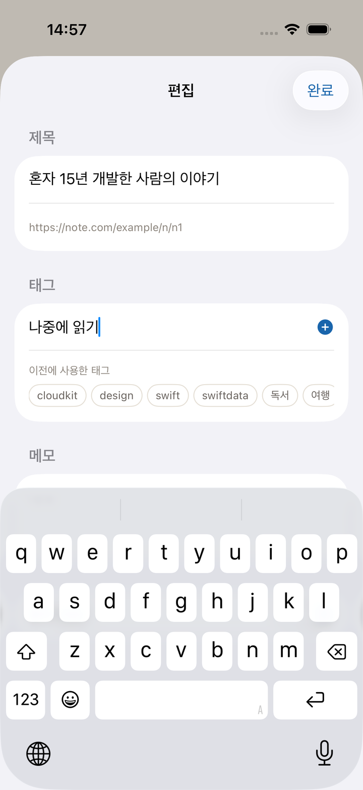
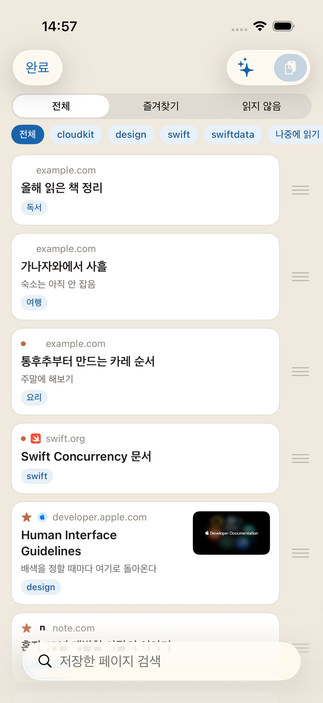
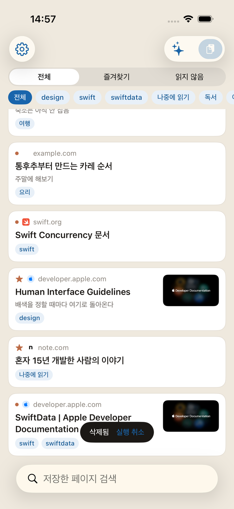
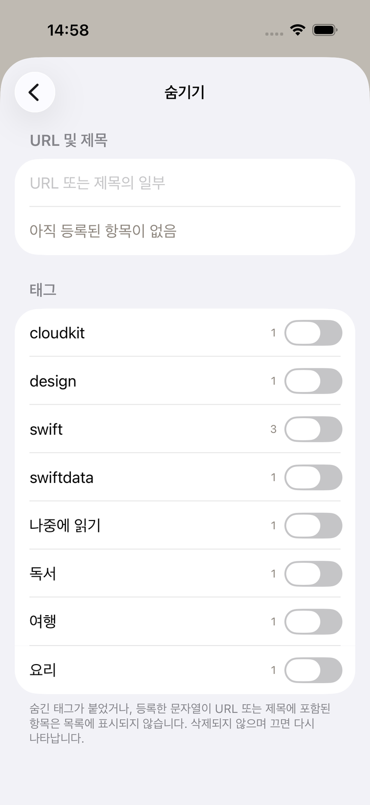
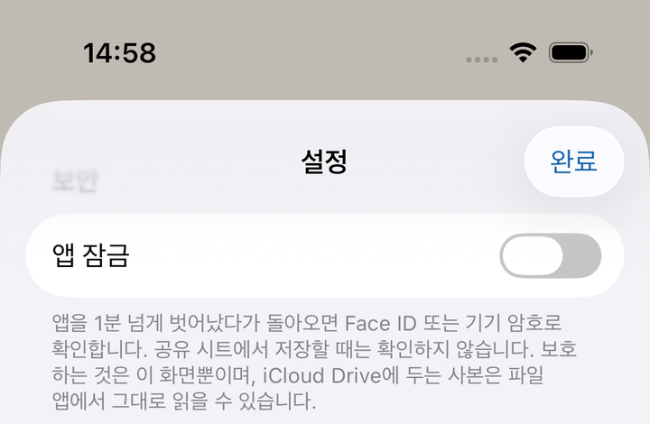

입구는 두 개입니다. 어느 쪽이든 누른 순간 저장이 끝납니다.
Safari 등에서 페이지를 열고 공유 버튼 → Kakesu를 고릅니다. 목록에 없을 때는 공유 시트의 ‘기타’에서 Kakesu를 켜 주세요.
고른 시점에 저장은 끝나 있습니다. 이어서 나오는 화면에서 태그와 메모를 그 자리에서 붙일 수 있지만, 붙이지 않고 닫아도 됩니다. 나중에 편집 화면에서 더할 수 있습니다. 잘못 눌렀을 때는 왼쪽 위의 ‘실행 취소’로 방금 만든 것만 지울 수 있습니다.
URL을 복사한 상태로 앱을 열고 오른쪽 위 붙여넣기 버튼을 누릅니다.
제목과 썸네일은 나중에 채워집니다. 저장한 직후에는 URL만 늘어서지만, 앱을 열어 둔 사이에 차례로 가지러 갑니다. 신호가 약한 곳에서 저장해도 저장 자체는 실패하지 않습니다.
같은 페이지를 두 번 저장해도 늘어나지 않습니다
(?utm_source= 같은 추적용 매개변수나 www.의 차이는 무시하고 같은 페이지로 봅니다).
읽지 않음은 동그란 표시, 즐겨찾기는 별로 가려냅니다.
제목뿐 아니라 페이지 본문도 검색 대상입니다. 저장한 뒤 제목과 함께 본문 앞부분을 담아 둡니다. 제목을 기억하지 못해도 본문에 있던 말로 캐낼 수 있습니다.
목록 오른쪽 위의 반짝임 표시 버튼에서 말로 물을 수 있습니다. ‘사용법을 알려 줘’, ‘요즘 뭘 저장했지?’, ‘읽지 않은 게 쌓인 건 어느 쪽?’처럼 물으면 답 아래에 참고한 항목이 늘어서므로 그대로 열 수 있습니다.
기기 안에서만 작동합니다. 질문도 답도 밖으로 보내지 않습니다. 건네는 것은 질문에 가까운 것을 몇 건으로 좁힌 제목·태그·메모·사이트 이름과, 개수나 자주 쓰는 태그 같은 집계뿐입니다. URL 전문은 건네지 않습니다.
이어서 물을 수 있습니다. ‘그건 언제 저장했지?’처럼 앞의 대화를 받은 물음이 가능합니다. 화제를 바꾸고 싶을 때는 왼쪽 위의 ‘새 대화’를 눌러 주세요. 그때까지의 대화는 사라집니다. 대화는 어디에도 남지 않으므로 화면을 닫아도 사라집니다.
답 아래의 ‘복사’로 그대로 옮겨 적을 수 있습니다. 이 사이트의 위치를 물으면 눌러서 열 수 있는 링크로 답합니다. 누를 수 있는 링크가 되는 것은 이 사이트뿐입니다. 저장한 페이지의 URL을 답에 쓰는 일은 없습니다.
Apple Intelligence를 지원하는 기기(iOS 26 이상)에서 iOS 설정으로 켜 두었을 때만 버튼이 나옵니다. 지원하지 않는 기기에서는 버튼 자체가 나오지 않습니다.
목록에서 기사를 길게 눌러 ‘요약’을 고르면, 열자마자 요약이 나옵니다. 읽기 위한 화면이 아닙니다. 지금 읽을지 말지를 정하기 위한 것입니다.
그대로 그 기사에 대해 이어서 물을 수 있습니다. 답의 근거는 그 페이지의 본문뿐이며, 다른 저장분은 섞지 않습니다. 본문을 가져오지 못한 페이지는 요약할 수 없습니다(그때는 그렇다고 알려 줍니다).
기사별 대화는 최신 5건만 기기에 남습니다. 나중에 같은 기사를 열었을 때 이어서 물을 수 있도록 하기 위해서입니다. iCloud에는 보내지 않습니다. 기기를 바꾸면 넘어가지 않습니다.
남은 대화는 ‘묻기’ 화면의 왼쪽 위(말풍선 표시)에서 한눈에 볼 수 있습니다. 한 건씩 지울 수도, 오른쪽 위의 ‘모두 삭제’로 한꺼번에 지울 수도 있습니다. 요약 화면에서는 왼쪽 위의 휴지통으로 그 기사의 대화만 지울 수 있습니다.
‘묻기’와 마찬가지로 Apple Intelligence를 지원하는 기기(iOS 26 이상)에서만 메뉴에 나옵니다.


앱 안에서 열립니다. 다 읽고 닫으면 목록의 같은 자리로 돌아옵니다. 연 시점에 읽음이 됩니다.
광고나 군더더기를 걷어내고 본문만 보여 줍니다. 기본값은 켜짐입니다. 있는 그대로의 페이지를 보고 싶을 때는 설정 → 표시 → ‘리더로 열기’를 꺼 주세요. 리더를 지원하지 않는 페이지는 끄지 않아도 그대로 열립니다.
글자 크기나 배경색은 열린 화면 안에서 바꿀 수 있습니다.
로그인이 필요한 페이지나 확장 프로그램을 쓰고 싶은 페이지는 여기서 Safari로 넘깁니다.

길게 누르기 → 편집으로 제목·태그·메모·읽지 않음을 고칠 수 있습니다.
순서 바꾸기는 길게 누르기 → 순서 바꾸기 → 손가락으로 끌기. 좁히거나 검색하는 중에는 순서를 바꿀 수 없습니다(보이는 일부만 움직이면 전체 순서가 무너지기 때문입니다).
제목을 가져오지 못한 항목은 길게 누르기 → 다시 가져오기로 한 번 더 가지러 갑니다.
설정 → 숨기기에 쓰고 있는 태그가 개수와 함께 늘어섭니다. 태그 행을 왼쪽으로 쓸어넘기면 이름 변경과 삭제가 나옵니다. 둘 다 모든 항목에 한꺼번에 적용됩니다.
태그를 삭제해도 북마크는 사라지지 않습니다. 그 태그가 떨어질 뿐입니다. 태그가 늘어나면 같은 화면의 검색으로 좁힐 수 있습니다.


왼쪽으로 쓸어넘기거나, 길게 누르기 → 삭제. 지운 직후에 ‘실행 취소’가 몇 초만 나옵니다. 누르면 되돌아옵니다. 누르지 않으면 그때 비로소 사라집니다.
설정 → 숨기기. URL이나 제목에 든 문자열을 등록하면 거기에 해당하는 것이 목록에서 사라집니다. 태그 단위로 숨길 수도 있습니다. 어느 쪽이든 등록은 남긴 채 켜고 끌 수 있습니다.
숨긴 개수는 목록 아래에 나옵니다. 누르면 설정이 열리므로 거기서 ‘숨기기’로 갈 수 있습니다.


주 1회, 저장한 전체를 JSON으로 만들어 iCloud Drive의 Kakesu 폴더에 둡니다. ‘파일’ 앱에서 열 수 있고, 앱을 지운 뒤에도 남습니다.
사본은 최근 8회분을 남기고, 오래된 것부터 지워집니다.
설정 → 데이터에서는 언제든 내보내기(보낼 곳은 직접 고릅니다)와 가져오기를 할 수 있습니다. 가져오기에서는 이미 있는 URL은 건너뛰고 없는 것만 더합니다. 덮어쓰지 않습니다. 같은 화면에 자동 사본을 마지막으로 남긴 날짜도 나옵니다.
저장한 URL은 곧 열람 기록 그 자체입니다. 기기를 남에게 건넬 일이 있다면 설정 → 앱 잠금을 켜 주세요. 앱을 열 때 Face ID / Touch ID나 기기 암호로 확인합니다.
지키는 것은 앱 화면뿐입니다. iCloud Drive에 둔 JSON 사본은 「파일」 앱에서 그대로 읽을 수 있습니다. 사본까지 감추고 싶다면 「파일」 앱 쪽에서 관리해 주세요.
기기에 암호를 설정하지 않았다면 이 기능은 쓸 수 없습니다(설정 항목을 누를 수 없게 됩니다).
공유 시트에서의 저장에는 잠금이 걸리지 않습니다. 저장 앞에 확인을 끼우면 던져 넣은 줄 알았던 것을 놓치기 때문입니다.

설정의 ‘이 앱에 대하여’에서 이용약관과 개인정보 처리방침을 열 수 있습니다. 같은 곳에 앱 버전도 나오므로, 문의하실 때 알려 주세요.
홈 화면에 위젯을 두면 읽지 않은 개수가 나옵니다. 작은 크기는 1건, 중간 크기는 3건까지 최근 제목도 늘어섭니다. 누르면 앱이 열립니다.
앱 잠금을 켜 둔 동안에는 개수만 보여 줍니다. 제목도 사이트 이름도 위젯에는 내보내지 않습니다. 홈 화면은 잠그지 않은 채 남의 눈에 닿기 때문입니다.
기기가 잠겨 있는 동안에는 검색이 답하지 않습니다. 잠금을 풀지 않은 기기에 저장한 것을 내놓을 이유가 없기 때문입니다. 저장은 잠겨 있어도 됩니다. 던져 넣을 수 있다는 데 뜻이 있으므로 이쪽은 막지 않았습니다.
단축어 앱의 ‘App’에서 Kakesu를 고르면 나옵니다. 자동화에도 넣을 수 있습니다.
같은 Apple 계정으로 로그인해 두었다면 그대로 나옵니다. 계정을 만드는 절차는 없습니다. 동기화를 멈추고 싶을 때는 iOS의 ‘설정’ → Apple 계정 → iCloud에서 Kakesu를 꺼 주세요.
여기에 없는 것은 문의 페이지에서 알려 주세요.